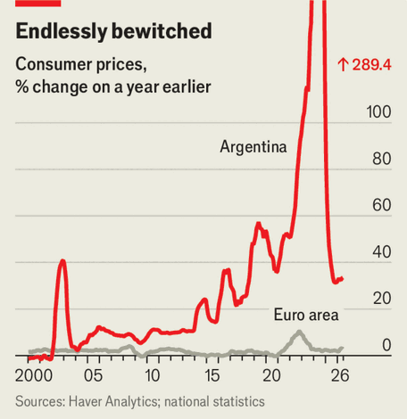

Javier Milei’s Odysseus act
He is wisely overhauling the central bank. But winning elections remains paramount
Aug 6th 2026
Odysseus had it easy. He only had to resist the lure of the sirens once. Javier Milei, Argentina’s president, is trying to bind not just his government from indulging in money-printing and thus crashing onto inflationary rocks, but to lash to the mast all future governments as well.
Because it is the central bank that issues money, his efforts are focused on changing the laws governing that institution. In a televised speech on July 30th he accused past governments of “looting” the central bank and announced what he claimed were “the most important set of structural reforms in the past 91 years”. He outlined a new law that would ban central-bank financing of the government, make the sole goal of the bank preserving the value of the currency, and require a two-thirds majority in both houses of Congress to remove the bank’s governor (the incumbent was appointed by Mr Milei).

Inflation has long been the scourge of Argentina (see chart). It has typically been caused by governments overspending and then printing money to fill the gaps. When Mr Milei took office in December 2023, inflation was running at 13% per month. He took a chainsaw to spending, and he stopped the central bank from financing the government. That has helped bring down inflation to 1.9% per month. Mr Milei rages against the possibility that a future government could rev up the printers again. Reforming the central bank is his attempt to avoid that.
Most of his planned reforms, which are expected to pass Congress, are laudable. The bank now has five complex and contradictory goals including “economic development with social equity”. Simplification is wise. Governors who cannot be removed easily should find themselves empowered to reject government demands for free money. Explicitly prohibiting monetary financing at all levels of government should also help. Mr Milei also announced a liberalisation of capital and insurance markets, and a more questionable law inspired by the United States that will automatically shut down the government if it spends more than it gets in taxes for “several” consecutive months.
Still, there are wrinkles. Making it harder to sack bank officials is wise, but the reforms do not simultaneously improve the appointment process, which is odd. Mr Milei has also suggested that the new laws may include criminal penalties against central-bank officials who facilitate money-printing. That would be highly unusual and will hardly encourage talented economists to join the bank.
There are also outright gaps. The reforms do not limit the central bank’s predilection for foreign-exchange controls. Some remain in place today, as they have for most of the past 90 years, contributing to a cycle of temporary calm followed by crisis and inflation. In Peru, once a basket case but now a macroeconomic star, the constitution bars such restrictions. Yet the libertarian Mr Milei, fearing volatility and short-term inflation, is not yet ready to let the market freely set Argentina’s most important price: that of dollars.
Nor do the reforms fix other policy-related worries. “We don’t know what the monetary policy is,” says Santiago Bulat of Invecq, an Argentine consultancy. It has often been tight to keep the peso strong. This has helped control inflation, but has also hampered growth and sharply increased the number of loans which are not being repaid. But there is no clear rule on how the central bank should react to changes in inflation. To the imf’s dismay, the central bank also continues to focus on money supply rather than on interest rates as in much of the world. Mr Milei’s preferences clearly influence central-bank policy, hardly an example of independence.
One issue with the proposed reforms is that a different Congress could reverse them relatively easily in future. Two-thirds of Congress will be required to remove the bank governor, but that requirement could itself be removed with a simple majority. Forcing would-be money-printers to change the law does raise the political costs of monetary profligacy, but it is no guarantee against it.
Political norms are what really stop politicians meddling with central banks. Mr Milei’s bigger task is to shift those norms so that future politicians no longer believe profligacy is the route to electoral success. The best way to do that is to win elections and deliver results as a fiscal hawk.
Mr Milei is up for re-election in October 2027. For now he faces no strong rival. He has vastly reduced inflation, which, after an increase earlier this year, is falling again. Three ratings agencies have recently upgraded Argentina’s credit rating, in part because the central bank has sensibly been buying dollars to build its reserves. The central bank also just agreed to extend its $19bn swap line with China for another five years, another boost to its reserve coverage. The IMF is mostly purring.
But Argentines are less convinced. In July the approval rating for Mr Milei’s government fell to its lowest point this term. Growth is uneven and concentrated in sectors such as oil that require relatively few workers. The economy is now expected to expand by less than 3% this year. Formal employment has been falling. Economic activity fell in May for the second consecutive month. A string of corruption scandals have not helped. Mr Milei defended his scandal-engulfed chief of staff for far too long before letting him go.
Although there is time to turn things around, in Argentina a slide in the polls in an election year can set off a vicious cycle of market sell-offs, which then make poll ratings even worse. Reforming the central bank is part of a wider effort to break that dynamic. The government is trying to say “there won’t be many changes even if there is a change in the government, so please don’t sell every bond you have,” explains Mr Bulat. But should Mr Milei start to struggle, even a stronger central bank will not be able to save his project. ■